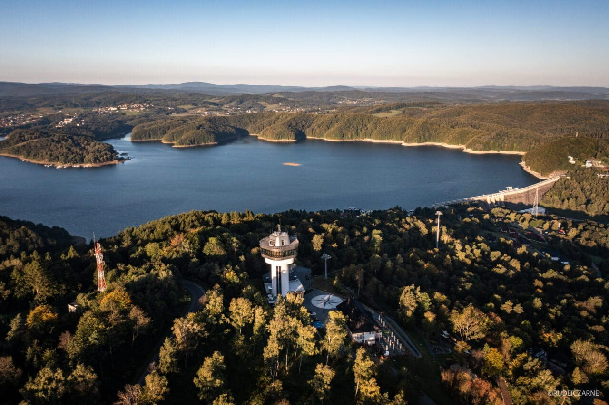
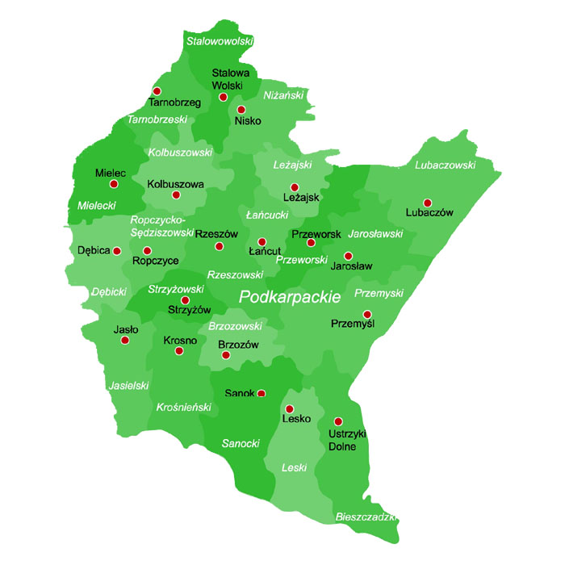

Region dzikiej natury, bogatej kultury i dynamicznego rozwoju
Powrót na stronę głównąWojewództwo podkarpackie to region położony w południowo-wschodniej Polsce, graniczący z Ukrainą i Słowacją. Charakteryzuje się zróżnicowanym krajobrazem, obejmującym m.in. popularne Bieszczady, a także wyżyny i rozległe tereny leśne. Obszar ten wyróżnia się najniższą gęstością zaludnienia w kraju, ale jednocześnie posiada jeden z niewielu regionów w Europie, w których liczba ludności rośnie
